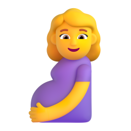
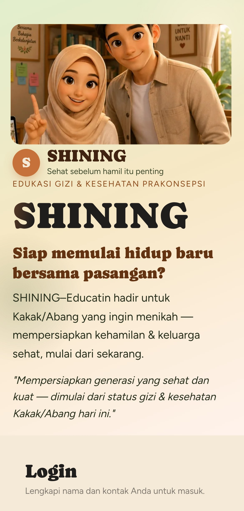
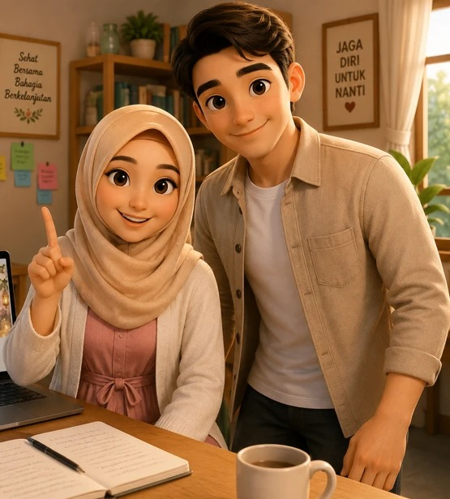

Latar belakang. Data media sosial catin dan kinerja edukasi gizi online di lapangan masih terbatas.
Tujuan. Mengevaluasi implementasi platform SHINING dan kaitan media sosial catin dengan pengetahuan, sikap HBM, dan IMT.
Metode. Cross-sectional dan evaluasi proses; Kota Binjai, Juli–Oktober 2026; 198 pendaftar, 74 data lengkap.
Hasil. Hanya 38,9% menyelesaikan semua instrumen. WhatsApp dominan (59,5%). Pengetahuan terkait sikap (r=0,414), tetapi 51,4% berat badan lebih/obesitas.
Simpulan. Arahkan catin ke sumber kredibel, biasakan cek fakta, dan gunakan instrumen ringkas.

Prakonsepsi masa kritis, tetapi sering diabaikan- Misinformasi gizi marak di media sosial
 Efek edukasi online catin masih beragam
Efek edukasi online catin masih beragam Retensi rendah, banyak yang putus di tengah jalan
Retensi rendah, banyak yang putus di tengah jalan GAP: laporan implementasi platform prakonsepsi online masih langka
GAP: laporan implementasi platform prakonsepsi online masih langka
Mengevaluasi proses implementasi platform SHINING
Menganalisis pola media sosial catin dan kaitannya dengan pengetahuan, sikap, dan IMT
3.1 Desain
Cross-sectional + evaluasi proses3.2 Subjek
198 catin → 74 dianalisis (30 L, 44 P)3.3 Waktu & lokasi
Kota Binjai; Juli–Oktober 20263.4 Instrumen
Pengetahuan, sikap HBM, FFQ, IPAQ-SF, medsos, IMT3.5 Analisis
Spearman, Mann-Whitney, Kruskal-Wallis, Fisher3.6 Indikator proses
Penyelesaian, lama isi, kiriman ganda, data hilang3.7 Etik
KEPK Poltekkes Kemenkes Medan No. 01.26.1986/2025Empat Langkah, Selesaikan Satu Sesi

- Scan kode QR di sampingBuka kamera HP, arahkan ke kode QR.
- Isi form LoginNama lengkap, No. HP/Email, pilih BPPKB/BKKBN.
- Kerjakan Sesi 1 — Data AwalSelesaikan bertahap dalam 1 (satu) minggu.
- Tuntaskan Sesi 2 — Data AkhirSetelah 8 minggu, buka link yang sama.
1. Analisis
kajian & survei kebutuhan
2. Desain
konten edukasi berbasis HBM
3. Pengembangan
platform SHINING & materi
4. Implementasi
uji coba & rekrutmen
5. Evaluasi
proses & dampak
5.1Platform SHINING Tujuan 1


Web untuk HP tanpa unduhan/akun; data tersimpan otomatis; IMT langsung tampil.
5.2Iteratif: Kendala & Solusi Tujuan 1
- Juli: Angka 0 nomor HP hilang → Normalisasi nomor & karantina
- Awal Okt: Progres hilang saat ganti HP → Progres dilacak per nomor HP
- Pertengahan Okt: Data makanan pokok FFQ hilang → Simpan draf otomatis
5.3Penyelesaian Pre-test Tujuan 1
5.4Penggunaan Media Sosial (n=74) Tujuan 2
Pola penggunaan
- Platform utama
- 59,5% WhatsApp
- 33,8% TikTok/IG
- 6,8% lainnya
Hubungan dengan sikap & IMT
Simpulan
- Platform sederhana layak
- Medsos didominasi WhatsApp
- Pengetahuan baik, BB lebih >50%
Saran
- Instrumen ringkas
- Biasakan cek fakta
- WhatsApp untuk pengingat
Implikasi SHINING
- Instrumen dipecah per kunjungan
- Pengingat via WhatsApp
- Konten singkat TikTok/IG
- DPPKB dan Kemenag Kota Binjai
- Calon pengantin Kota Binjai
- Semua pihak yang berkontribusi
